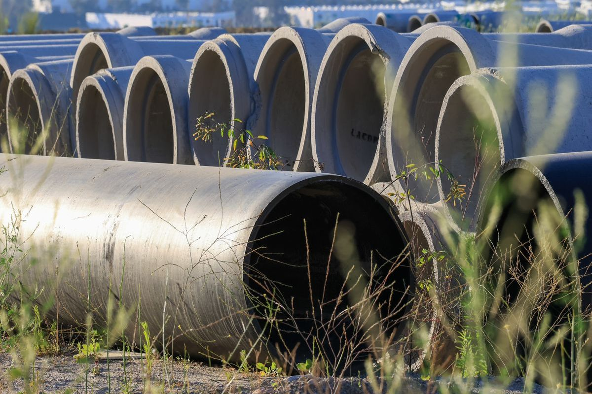
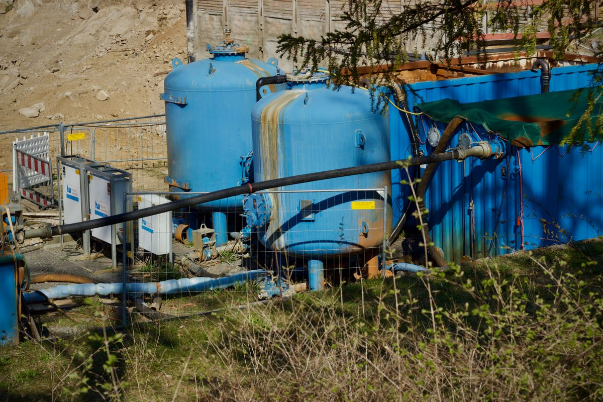
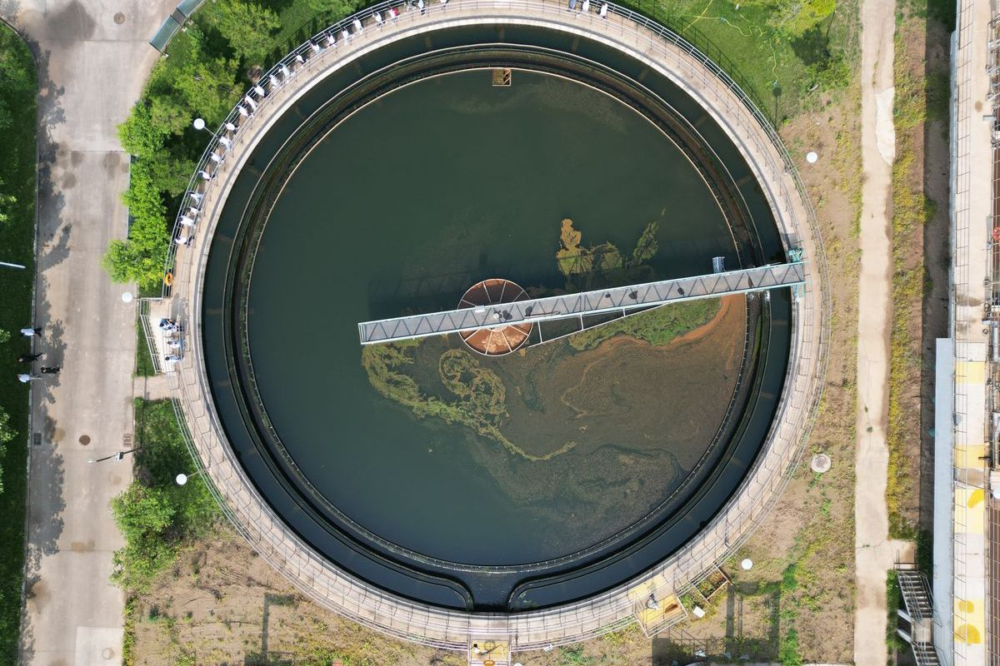

04 — Proyectos
Obras
Trabajo de redes, colectores y riego. La mayor parte queda enterrada: se ve una vez, mientras se hace.
Obras de muestra. Las fotos y los títulos son ilustrativos y están acá para mostrar cómo se va a ver la sección: se reemplazan por obras reales de Patronux.





Contacto